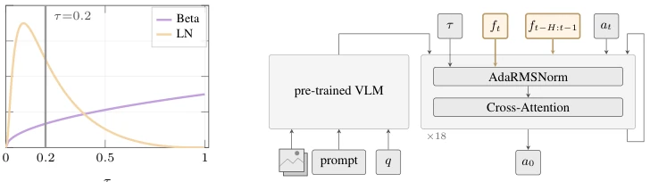
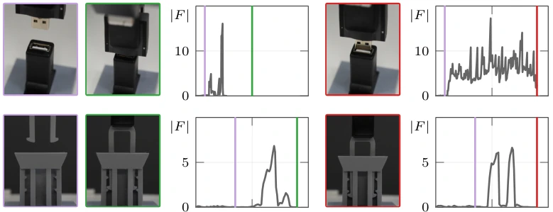
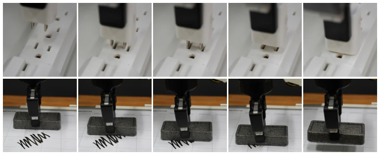

This paper conducts a deep autopsy on the "maladaptation" of VLA in contact tasks, foregoing fancy large models to focus on tinkering with Flow Matching's noise scheduling. The authors discovered that the Beta scheduling fed gradients entirely to high-noise regions, causing fine manipulation to fail, while direct concatenation of force signals was drowned out by visual data. The FACT scheme is quite pragmatic; by adjusting the scheduling and adding a force-perception module, it increased success rates from 41% to 66% without requiring additional parameters. However, it is currently limited to the Franka robot arm; switching to a different robot architecture might necessitate a rewrite, as it is specifically designed for Flow Matching. It serves as a "contact patch" for VLA, but remains far from universal contact manipulation, as it does not resolve all complexities of physical interaction.
Contact-rich tasks (such as plugging in a connector or inserting a key) require sub-millimeter alignment and force feedback, yet VLA models often fail in these scenarios. Existing work [8, 9] mostly assumes the issue stems from missing force perception or architectural problems, attempting to resolve them through fusion modules. However, the authors found that the root cause may lie within the training process itself: the Beta noise scheduling of Flow Matching leads to insufficient gradient signals during the low-noise denoising stage (the fine correction zone), known as Training Starvation, and causes action amplitude collapse during contact, known as Delta Collapse. Furthermore, force signals are treated as ordinary input streams, ignoring their sparsity and temporal dynamics. This results in models either suffering from inaccurate alignment (Precision Failure) or ineffective force control (Force Failure), as existing architectures cannot effectively utilize force information.

Figure 3: FACT method overview. (a) Logit-Normal (LN) concentrates 6× more gradient signal in the contact-correction regime (τ < 0.2, gray line) than the default Beta(1.5, 1.0) schedule. (b) Time-aware force injection uses the current reading ft to modulate per-layer sensitivity via AdaRM- SNorm, while the force history ft−H:t−1 is prepended as tokens for temporal context.
The core of FACT consists of two strategies. The first strategy modifies the noise scheduling, replacing the Beta scheduling with Logit-Normal (LN) to reallocate post-training gradient signals to low-noise regions (τ < 0.2), allowing the model to practice fine corrections more extensively without altering the architecture. The second strategy is force perception injection, divided into three steps: 1) Current force readings modulate the AdaRMSNorm layer via an MLP to achieve contact-state-sensitive adjustment; 2) Force history from the past 30 steps is encoded as Token inputs to capture temporal dynamics; 3) A Gradient Gate blocks force signal gradients when no contact is detected, preventing the model from fitting zero-value noise. Combining both strategies not only addresses training shortcomings but also maximizes the value of force signals, all while maintaining extremely low inference overhead.

Figure 4: VLA failures on two contact-rich tasks. Each row shows an approach frame (purple) followed by a success (green) and failure (red) frame with the corresponding force profiles. Vertical lines denote the approach event and the times at which success or failure is registered. In USB insertion, failure is caused by sub-millimeter pose misalignment. In key insertion, failure is caused by missing the hard-stop and continuing to push past the seating point. The key is shown unoccluded for clarity although the lock is fully occluded during execution.
Evaluated on the Franka robot arm across 5 tasks (plugging, USB insertion, button pressing, board wiping, key insertion), totaling nearly 2500 real rollouts. Baselines included π0.5, ForceVLA [8], and TA-VLA [9]. FACT achieved an average success rate of 66%, significantly surpassing the baseline's 41%. Ablation studies demonstrated that LN scheduling provided significant improvements for precision tasks (+20pp), while force injection yielded even larger gains for force control tasks (+22.5pp). Replacing force signals with Gaussian noise caused a sharp performance drop, confirming that force information was genuinely utilized. Furthermore, FACT proved effective on the π0 backbone, indicating the method possesses cross-architecture generalizability. However, the board wiping task was fully successful, suggesting that some tasks can be accomplished via impedance control alone, implying VLA may not be strictly necessary for all scenarios.
其他图片Other Figures

Figure 1: Contact-rich manipulation tasks from our experiments. These tasks involve sustained or repeated physical interaction, where success depends on simultaneously regulating both motion and contact forces measured by a wrist-mounted force/torque sensor. Plug insertion (top) demands sub-millimeter alignment of the connector under partial occlusion while managing contact until the connector is fully seated in the socket. Board erasing (bottom) requires maintaining consistent contact with the surface throughout the stroke without damaging the surface.